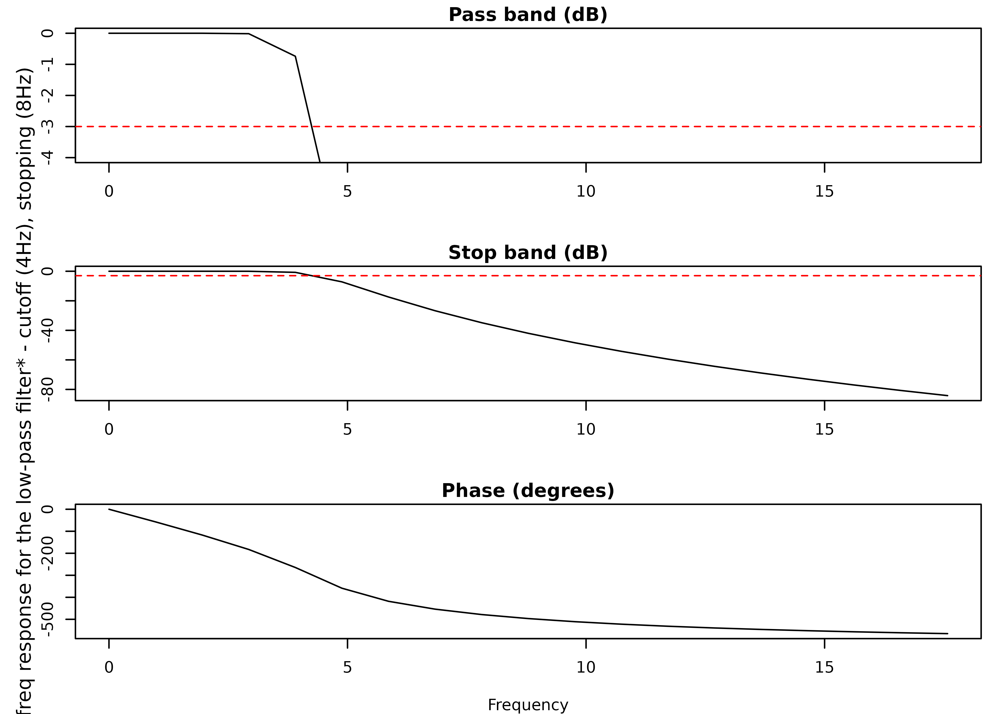
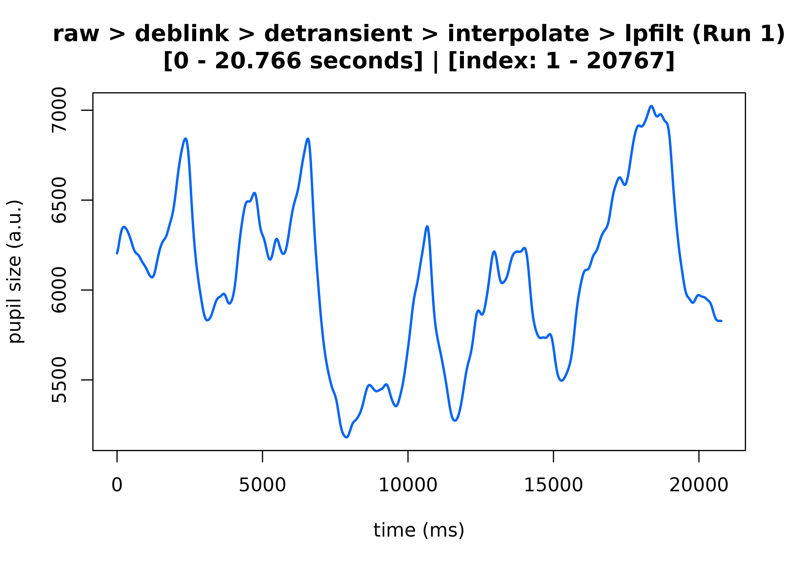
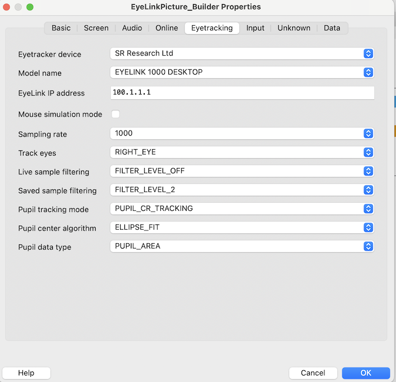

Complete Pupillometry Pipeline Walkthrough
Source:vignettes/complete-pipeline.Rmd
complete-pipeline.Rmd📦 Introduction
This vignette will walk you through the basics of getting started
with the eyeris package to preprocess your (eyelink)
pupillometry data from start to finish. Here, we’ll walk through loading
in the raw data, preprocessing, and quality control in a step-by-step
manner.
We will specifically focus on demonstrating the
eyeris::glassbox() function, which we built to streamline,
in part, the process of collecting and preprocessing any freshly
collected raw pupillometry dataset within minutes to
assess the quality of those data while simultaneously running a full
preprocessing pipeline in 1-to-2-ish lines of code.
🔎 The Glass Box Function
Our glassbox function – in contrast to a “black box”
function where you run it and obtain a result with little-to-no idea as
to how you got from raw input to cleaned output – provides a highly
opinionated prescription of steps and starting parameters we
(computational neuroscientists and signal processing experts at the
Stanford Memory Lab) strongly believe any pupillometry researcher should
use as their default starting point when preprocessing any set of
pupillometry data.
We recommend starting out with the glassbox
function to (ideally) reduce the probability of
accidental mishaps when “reimplementing” the individual steps
that make up the preprocessing pipeline both within and
across projects.
Moreover, the glassbox function provides an
“interactive” framework where you can evaluate the consequences of the
parameters used within each step on your data in real time, therefore
facilitating a fairly easy-to-use workflow for parameter optimization on
your particular dataset.
In essence, this interactive process takes each opinionated step and allows you to see both pre and post timeseries plots so you can adjust parameters stepwise until you are satisfied with your choices (and their consequences on your pupil timeseries data).
Installing eyeris
If you haven’t already installed the eyeris package:
# Install latest stable release from CRAN
# install.packages("eyeris")
# pak
# install.packages("pak")
# pak::pak("shawntz/eyeris")
# Or install the development version from GitHub
# install.packages("devtools")
# devtools::install_github("shawntz/eyeris")Loading Your Raw Data
For this demo, we’ll use our built in demo dataset, which contains a handful of trials from an associative memory task recorded in our lab.
demo_data <- eyelink_asc_demo_dataset()Running the Fully-Automated Pipeline
Here, we use the example data along with the default prescribed parameters and pipeline recipe:
# Run an automated pipeline with no real-time inspection of parameters
output <- eyeris::glassbox(demo_data)
#> ✔ [2025-08-04 00:37:07] [OKAY] Running eyeris::load_asc()
#> ℹ [2025-08-04 00:37:07] [INFO] Processing block: block_1
#> ✔ [2025-08-04 00:37:07] [OKAY] Running eyeris::deblink() for block_1
#> ✔ [2025-08-04 00:37:07] [OKAY] Running eyeris::detransient() for block_1
#> ✔ [2025-08-04 00:37:07] [OKAY] Running eyeris::interpolate() for block_1
#> ✔ [2025-08-04 00:37:07] [OKAY] Running eyeris::lpfilt() for block_1
#> ! [2025-08-04 00:37:07] [WARN] Skipping eyeris::downsample() for block_1
#> ! [2025-08-04 00:37:07] [WARN] Skipping eyeris::bin() for block_1
#> ! [2025-08-04 00:37:07] [WARN] Skipping eyeris::detrend() for block_1
#> ✔ [2025-08-04 00:37:07] [OKAY] Running eyeris::zscore() for block_1
#> ℹ [2025-08-04 00:37:07] [INFO] Block processing summary:
#> ℹ [2025-08-04 00:37:07] [INFO] block_1: OK (steps: 6, latest:
#> pupil_raw_deblink_detransient_interpolate_lpfilt_z)
#> ✔ [2025-08-04 00:37:07] [OKAY] Running eyeris::summarize_confounds()
# Preview first and second steps of the pipeline
plot(
output,
steps = c(1, 2),
preview_window = c(0, max(output$timeseries$block_1$time_secs)),
seed = 0
)
#> ℹ [2025-08-04 00:37:08] [INFO] Plotting block 1 with sampling rate 1000 Hz from
#> possible blocks: 1
Running the Pipeline Interactively
output <- eyeris::glassbox(demo_data, interactive_preview = TRUE, seed = 0)Overriding the Default Parameters
To override the default glassbox parameters directly
within the glassbox() function call, you need to pass in
the appropriate parameter(s) for each pipeline step to
glassbox().
Example
output <- eyeris::glassbox(
demo_data,
interactive_preview = FALSE, # TRUE to visualize each step in real-time
deblink = list(extend = 40),
lpfilt = list(plot_freqz = FALSE)
)
#> ✔ [2025-08-04 00:37:12] [OKAY] Running eyeris::load_asc()
#> ℹ [2025-08-04 00:37:12] [INFO] Processing block: block_1
#> ✔ [2025-08-04 00:37:12] [OKAY] Running eyeris::deblink() for block_1
#> ✔ [2025-08-04 00:37:12] [OKAY] Running eyeris::detransient() for block_1
#> ✔ [2025-08-04 00:37:12] [OKAY] Running eyeris::interpolate() for block_1
#> ✔ [2025-08-04 00:37:12] [OKAY] Running eyeris::lpfilt() for block_1
#> ! [2025-08-04 00:37:12] [WARN] Skipping eyeris::downsample() for block_1
#> ! [2025-08-04 00:37:12] [WARN] Skipping eyeris::bin() for block_1
#> ! [2025-08-04 00:37:12] [WARN] Skipping eyeris::detrend() for block_1
#> ✔ [2025-08-04 00:37:12] [OKAY] Running eyeris::zscore() for block_1
#> ℹ [2025-08-04 00:37:12] [INFO] Block processing summary:
#> ℹ [2025-08-04 00:37:12] [INFO] block_1: OK (steps: 6, latest:
#> pupil_raw_deblink_detransient_interpolate_lpfilt_z)
#> ✔ [2025-08-04 00:37:12] [OKAY] Running eyeris::summarize_confounds()Pipeline Steps with Overridable Parameters
eyeris::load_asc(): >blockeyeris::deblink(): >extendeyeris::detransient(): >n,mad_thresheyeris::lpfilt(): >wp,ws,rp,rs,plot_freqz
💬 Caveats
Detrend Step
Detrending is turned off by default.
To enable detrending in the pipeline, pass
detrend = TRUEtoglassbox().
Note: Detrending your pupil timeseries can have unintended consequences; we thus recommend that users understand the implications of detrending – in addition to whether detrending is appropriate for the research design and question(s) – before using this function.
I received this message… what does it mean and what should I do?
You (hopefully) shouldn’t encounter this, but if you do, let us explain:
***WARNING: SOMETHING OUTRAGEOUS IS HAPPENING WITH YOUR PUPIL DATA!***
The median absolute deviation (MAD) of your pupil speed is 0.
This indicates a potential setup / hardware issue which has likely propogated
into your pupil recording. Most often, this is due to online filtering being
applied directly to your pupil data via the EyeLink Host PC.
WE DO NOT RECOMMEND USING ANY ONLINE AUTO FILTERING DURING YOUR DATA RECORDING.
***ADDITIONAL INFO***
The default setting for communicating with the EyeLink
machine is to have filtering enabled on either live-streamed data or saved data
in EDF files.
We do not want these filters because:
(1) it is unclear how the EyeLink machine is specifying their low-pass filter,
and (2) it conflicts with an assumption here in `eyeris::detransient()` to use
one-step difference to compute a threshold for detecting large jumps in pupil
data (suggesting blinking or other artifacts).
***GENERAL TIP***
You should aim to have your data as raw as possible so you can 'cook' it fresh!
***WHAT TO DO NEXT***
If you would like to continue preprocessing your current pupil data file,
you should consider skipping the `eyeris::detransient()` step of the pipeline
altogether. Advanced users might consider additional testing by manually
passing in different `mad_thresh` override values into `eyeris::detransient()`
and then carefully assessing the consequences of any given override value on
the pupil data; however, this step is not recommended for most users.
PLEASE CONTINUE AT YOUR OWN RISK.Basically the default setting for communicating with an EyeLink machine is to have filtering enabled on either live-streamed data or saved data in EDF files. You do not want these filters because
- it’s unclear what are their low-pass filter specifications, and
- it conflicts with an assumption in
eyeris::detransient()to use one-step difference to compute a threshold for detecting large jumps in pupil data (suggesting blinking or other artifacts).
In general, you’d like to have your data as raw as possible so you can “cook” it fresh.
So, if your data aren’t as raw as possible, you will need to
run eyeris without the detransient
step.
To skip the
detransientstep, passdetransient = FALSEinto yourglassbox()call.
To skip the detransient step within the
glassbox pipeline, pass detrend = TRUE to
glassbox().
Some additional notes about preventing live filtering in future recordings…
Unfortunately the Live Sample Filter and
Saved Sample Filter are two common settings when experiment
software communicates with EyeLink. For example, PsychoPy
incorporates them in the eyetracking setting panel, and if you use
pylink directly, these two settings are also included in
their example script / function used to connect to EyeLink. The same
goes for Eprime and NBS Presentation, where
these two filter settings are users’ responsibilities to set.
Adjusting the config.ini file on your EyeLink host PC to
set the defaults to be OFF is not sufficient as they will
get overwritten when experiment software (PsychoPy,
Eprime, NBS Presentation, etc.) make the
initial connect request.
Therefore, unfortunately all users for all future experiments need to
be cognizant of this setting. This is why
eyeris::detransient() will yell the long warning message at
you (as a reminder to turn off hardware filters).
So moving forward, please consider taking the following recommendations into consideration:
Use
pylinkdirectly, add additional optional settings beyond what the SR Research example scripts set so you ping down all the optional settings. In terms of the filter settings, it boils down to callingpylink.EyeLink.setHeuristicLinkAndFileFilter(), but there are other settings that you likely want to hard-code into your experiments.Use
pylinkdirectly, but don’t code additional optional settings into you scripts. Instead, you must manually inspect the settings on the console screen of host PC at the start of each experiment to make sure they are set correctly. Specifically, in terms of the filter settings, you just need to make sure bothOnlineandSaved Sample Filteringare set toOFFon the EyeLink setup screen. It’s on the left column along with the button to auto-threshold and toggle which eye to track. This applies to all the other optional settings too.Use the
builderandioHubdirectly, and set these settings in the eyetracking setting panel, which saves to each experiment, so you don’t need to worry about it. Specifically, in terms of the filter settings, you should setFILTER_LEVEL_OFFfor both live and saved sample filtering. You can see all the different optional settings here: https://github.com/mh105/psychopy-eyetracker-sr-research/blob/main/psychopy_eyetracker_sr_research/sr_research/eyelink/eyetracker.py.For most users, we simply recommend using the
PsychoPybuilder forPsychoPyexperiments and use thepsychopy-eyetracker-sr-researchplug-in maintained by thePsychoPydevelopment team + Alex He, Ph.D., Stanford Postdoctoral Scholar in the Purdon lab under the Department of Anesthesiology and in the Wagner lab under the Department of Psychology, and co-author ofeyeris.

📚 Citing eyeris
If you use the eyeris package in your research, please
cite it!
Run the following in R to get the citation:
citation("eyeris")
#> To cite package 'eyeris' in publications use:
#>
#> Schwartz ST, Yang H, Xue AM, He M (2025). "eyeris: A flexible,
#> extensible, and reproducible pupillometry preprocessing framework in
#> R." _bioRxiv_, 1-37. doi:10.1101/2025.06.01.657312
#> <https://doi.org/10.1101/2025.06.01.657312>.
#>
#> A BibTeX entry for LaTeX users is
#>
#> @Article{,
#> title = {eyeris: A flexible, extensible, and reproducible pupillometry preprocessing framework in R},
#> author = {Shawn T Schwartz and Haopei Yang and Alice M Xue and Mingjian He},
#> journal = {bioRxiv},
#> year = {2025},
#> pages = {1--37},
#> doi = {10.1101/2025.06.01.657312},
#> }